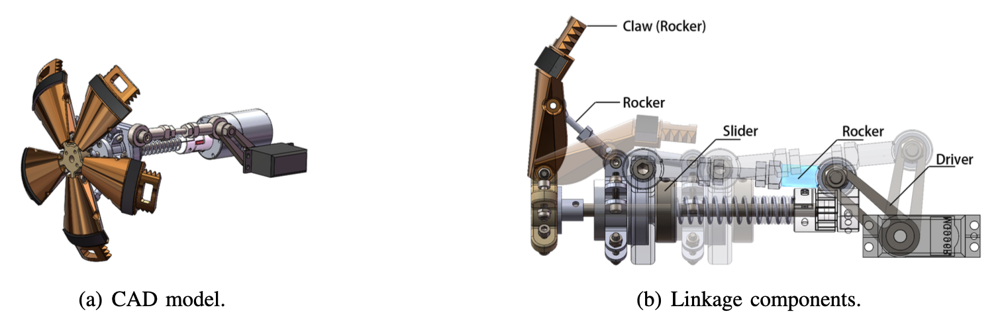

Design of Robotic Car with Transformable Wheels
Shanghai Jiao Tong University, Course Project, VM350 Design and Manufacturing II
Jun. 2021 - Aug. 2021
Abstract
Robotics technology influences every aspect of society.
It has the ability to positively alter people's lives and work habits, increase efficiency and safety, and deliver better service.
Robotics are used in almost every field nowadays with various applications.
According to CNET, some robots are exploring space - Dextre, Voyager 1 and 2, Rosetta to name a few.
Also, robots can be deployed to assess situations in the event of disasters.
Finding people who may be trapped, and transmit the position to rescue teams.
Our objective for this project is to explore ideas on transformable vehicles capable of sensing its own environment.
How should the robot adopt its wheel design? What algorithm should it follow to reach the destination.
Firstly, we focused on the wheel designs, and did research on various wheel geometry.
Our next concern was AI and control system designs.
With the help of ultrasonic sensors, DC motors, and servos, the robot was able to understand the surroundings and transform.
The final project model completed all criteria set for this research.
With fast terrain adapting capability and smart AI, the vehicle was able to perform its given tasks.

Mechanical design of the transformable wheel. The linkage is a rosette of a rocker-slider mechanism driven by a servo.
The spring on the wheel shaft provides supporting force when the wheel expands.
Demostration of the robotic car (a) climbing up a step and (b) running through a tunnel. The wheels automatically transform when the distance sensors detect the step without braking,
and then it is able to rove on the sand with the transformed wheels. After climbing down the step, the wheels automatically transform back.
The robotic car is also able to self-navigate through the tunnel with a safe gap away from the side walls by adjusting its direction according to the distance sensed.
My Contribution
◊ Led a three-member team and finished both the entire mechanical and control system designs.
◊ Coded the control program related to sensor feedback in C++ using the Arduino system.